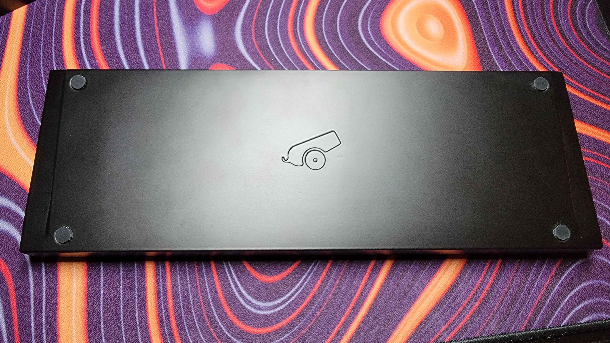
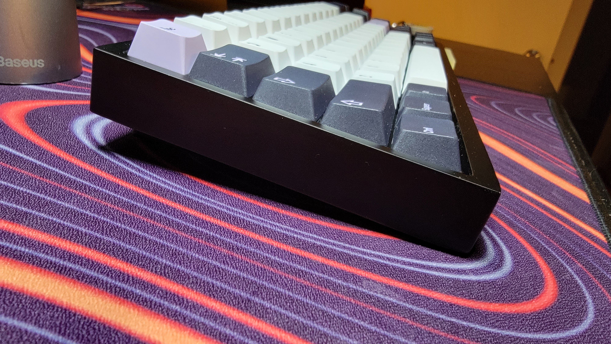

May 9th, 2022
Contents
Introduction:
This keyboard isn’t my personal build, but rather a friend of mine’s. After wanting to upgrade from a prebuilt, he asked me for help to find the parts and assist with his first custom keyboard build.
After looking at several options, the Bakeneko65 seemed like the best option out of the current budget 65% market. I looked at several options like the QK65, Zoom65, and even the Tofu and other more budget options, but felt that the Bakeneko65 was a good choice in a market dominated by the PE foam mod and gasket mounts. My main reason choosing the Bakeneko65 over the QK65 is because the QK65 relies extremely heavily on the PE foam in order to sound great, whereas the Bakeneko65 can sound great on its own.
Interior
By lining the outside of the PCB with a silicone O-Ring, the PCB is pushed into the case where the O-Ring rests on posts surrounding the inside edge. This is how it’s held in place: no screws, no sandwiching between a top and bottom piece. It stays in surprisingly well; I found it difficult to remove the PCB from the Case once the O-Ring was pushed in all the way. This mounting style is called the Gummy O-Ring mount, and allows for a bouncier and more forgiving typing experience because the PCB is essentially sitting over the bottom of the case.
In comparison to traditional gasket mounts, the Gummy O-Ring mount has a little bit more give to it due to being mounted by a big rubber band instead of silicone tabs connected to a plate. Because of this, this type of mounting style allows for a bouncy typing experience regardless of the plate material. We decided to stick with the stock FR4 plate as this is what I found to be my personal favorite pairing with the switch choice of JWK linears. It’s a nice in-between of PC (polycarbonate) and Aluminum, not being too flexible but still able to achieve a less “clacky” and slightly deeper sound signature in comparison to the metal plates.
Exterior
The Bakeneko65 has a very simplistic case. The Cannon Keys logo is engraved on the back where the four rubber feet sit. This isn’t the prettiest back, but is certainly good enough considering this is still within the "budget" range.
This case has a seamless edge, which is something that I’m really happy to see catch on. It makes the keyboard feel more whole rather than a top piece and bottom piece slapped together with a PCB in between. The edges are also slightly rounded off, which is a nice touch in comparison to the sharp edges on something like the Tofu. The finish is a satisfying matte black, but it does attract fingerprints. The case also sits at a very comfortable 6° typing angle. Overall, this is a solid case that checks off all the boxes for a great keyboard.
Sound/Feel (switches & typing experience)
In this keyboard, my friend decided to go with Mauves. The Mauve switch is a very standard JWK linear, almost identical to that of the Alpaca, except in color. We lubed these with 205g0, filmed with Wuque Studio films, and the result was as expected: the switches are very smooth with a little bit of clack. The Mauves come with a stock spring weight of 65g, which is a great spring weight for typing and gaming. I personally don’t like anything lighter than 58g or heavier than 67g, as anything outside of this range feels either a little too light, or borderline exhausting.
Here's a sound test:
You can almost hear the space between the bottom of the case and the Gummy O-ring mounted PCB. It’s not hollow, but most certainly makes the typing sound a little “lighter” rather than full and deep. I’m a fan of this, as keyboards filled with foam have been all the fad recently, which has felt a little draining to listen to. This is much easier on the ears.
As stated in the interior section of this write-up, the O-ring mount makes the typing experience feel bouncier than almost any other mounting style I’m used to (yes, on par with the leaf spring mount in the Owlab Spring, surprisingly). In combination with the FR4 plate and the 6° typing angle, this is a very comfortable typing experience that is almost unmatched by anything within this price range.
Closing
I’m sure most people who’ve done their research on the Bakeneko65 already know this but for those who didn’t: this is one of the best “budget” 65% keyboard on the market. The value that you get for the price of $165 is so good that I would consider this almost on-par with other $300-400 keyboards.
But I do have to emphasize, almost on-par with keyboards like the Mode Sixtyfive, Vega, or the RAMA M65. I would agree with Cannon Keys’ statement that you do get that “endgame feel” and typing experience, but I don’t think you necessarily get the sound that you can achieve with the Vega or the Sixtyfive. And you shouldn’t be able to at less than 1/2 of the price. However, the Bakeneko65 can most certainly compete and come to a level close to that of more expensive keyboards.
Overall, the Bakeneko65 is a fantastic value keyboard that meets the requirements of a great custom keyboard. It has the flex, the quality case, the layout, and even a decent sound signature that you can even modify with PE foam or tape mod if you really want. For anybody looking to buy their first, start here.
Thanks for reading,
Justin